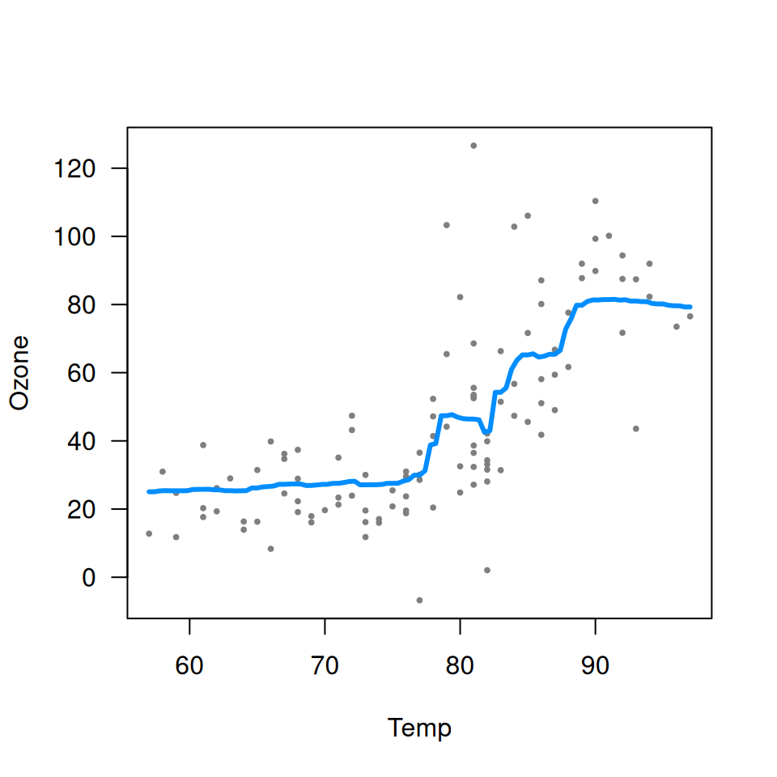
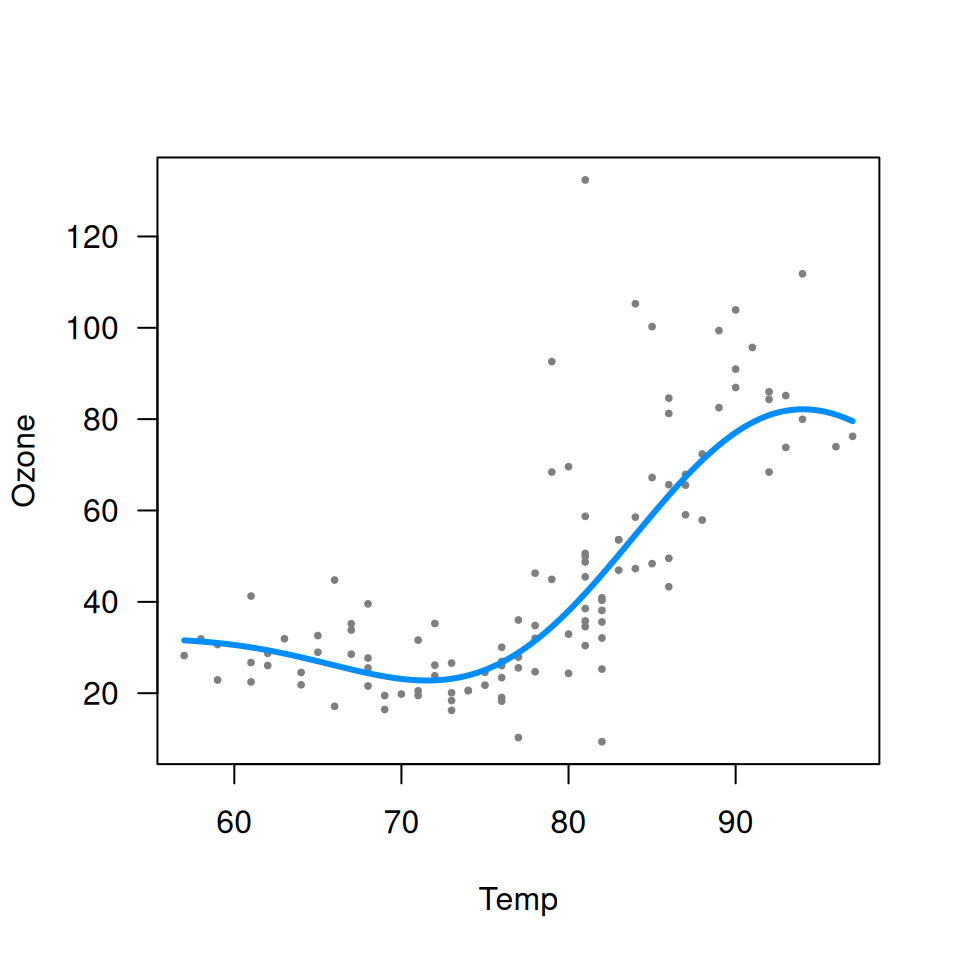
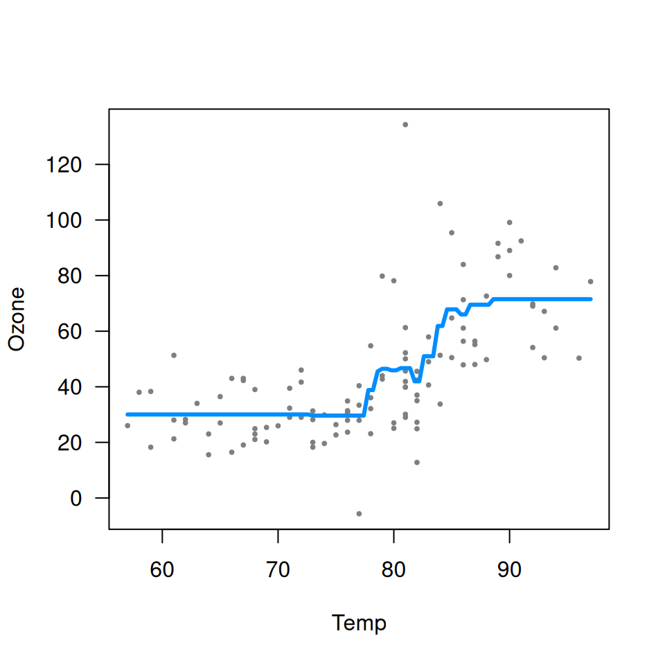
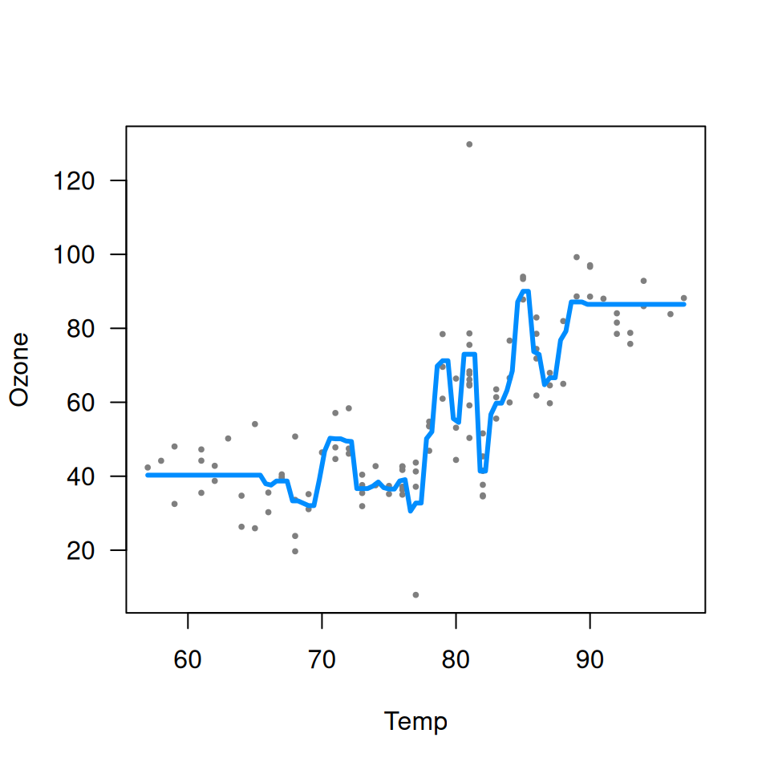

As the name implies, visreg is primarily designed to
visualize regression models. However, it is also compatible with any
formula-based model class that supplies a predict method,
which includes models such as random forests and support vector
machines. Such methods are often thought of as
`black boxes'', butvisreg` offers a convenient way to
visualize the resulting fit and possibly gain some insight into the
model. Some of these packages do not automatically handle missing data,
so we first create a complete-case data set:
aq <- na.omit(airquality)Random forests
library(randomForest, quietly=TRUE)
fit <- randomForest(Ozone ~ Solar.R + Wind + Temp, data=aq)
visreg(fit, "Temp", ylab="Ozone")
Support vector machines

Note that neither random forests nor support vector machines are able to provide confidence bands for fitted values, so no shaded bands appear.
Gradient boosted trees
The implementation of gradient boosted trees in the gbm
package does not offer a residuals method. This would
normally cause visreg to omit plotting the partial
residuals. However, we can supply our own user-defined
residuals method:
residuals.gbm <- function(fit) {fit$data$y - fit$fit}This is useful to be aware of in general: if you are ever working
with a model class that does not provide a residuals method
or a predict method, you can always write your own.
Once defined, we
library(gbm)
fit <- gbm(Ozone ~ Solar.R + Wind + Temp, data=aq, distribution="gaussian")
visreg(fit, "Temp", ylab="Ozone")
Note that the default settings for gbm do not produce a
very good fit here. In particular, the default number of trees (100) is
too low to capture the relationship between temperature and ozone. By
increasing the number of trees, we obtain a much more reasonable
fit:
fit <- gbm(Ozone ~ Solar.R + Wind + Temp, data=aq, distribution="gaussian", n.trees=5000)
visreg(fit, "Temp", ylab="Ozone")
This is a nice illustration of how visualizing a “black box” method
using visreg can provide insight into setting some of the
tuning parameters of these methods.